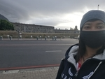

Historic Places in Cape Town
District Six Museam

- District Six Museum is a museum in the former inner-city residential area and, District Six, in Cape Town, South Africa in an old Methodist church.
- District Six Foundation was founded in 1989 and the museum in 1994, as a memorial to the forced movement of 60,000 inhabitants of various races in District Six during Apartheid in South Africa in the 1970s.
- The floor of the museum is covered with a big map of the district with hand written notes of former inhabitants, which indicate where their houses were located.
City Hall

- The building was designed as the result of a public competition, the winning architects being Messrs Harry Austin Reid and Frederick George Green, with the contractors being Messrs T. Howard and F. G. Scott.
- The tower of the City Hall has a Turret Clock which strikes the hours and chimes the Westminster quarters.
- On February 11, 1990, only hours after his release from prison, Nelson Mandela made his first public speech from the balcony of Cape Town City Hall.
Castle of GoodHope
- The Castle of Good Hope (Dutch: Kasteel de Goede Hoop; Afrikaans: Kasteel die Goeie Hoop) known locally as the Castle or Cape Town Castle is a bastion fort built in the 17th century in Cape Town, South Africa.
- Originally located on the coastline of Table Bay, following land reclamation the fort is now located inland.
- Built by the Dutch East India Company between 1666 and 1679, the Castle is the oldest existing building in South Africa.